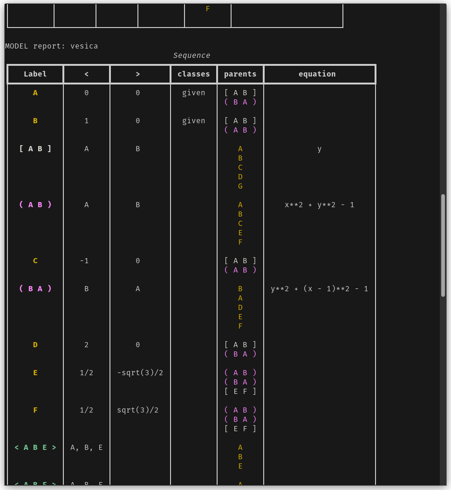

Symbolic compass-and-straightedge construction engine for the GEOMETOR ecosystem.
geometor.model is the foundational symbolic algebra engine of the interconnected GEOMETOR semantic digital archive. Powered by SymPy, it liberates classical compass-and-straightedge constructions from floating-point approximation into exact algebraic coordinates, automatic intersection discovery, and full ancestral dependency lineages across the corpus.
Core Principles¶
Points as Information: Every
Pointis defined as a pair of exact algebraic SymPy expressions (x, y) rather than floating-point approximations.Lines & Circles as Operations: Each
Line([ A B ]) andCircle(( A B )) is constructed from two existing points.Intersections as Consequences: Whenever a new line or circle is constructed,
Modelautomatically solves for all intersection points with existing primitives, simplifies and deduplicates algebraic coordinates, and records parent ancestry.Structures & Measurements: Segments (/ A B /), Polygons (< A B C >), and Wedges/Angles (< B A C )) attach directly to model points.
Ecosystem Integration¶
geometor.model powers the symbolic constructions across the entire GEOMETOR platform and coordinates directly with photon-platform/publish:
GEOMETOR • explorer: Interactive web workbench, animation timeline, and golden-ratio analyzer over serialized
geometor.modelJSON files.GEOMETOR • elements: Executable g1.py construction scripts and interactive step-by-step SVG diagrams across the 525-node G-Index.
GEOMETOR • etc: Composable triangle-center constructions (model.py and x-NNNNN.json) across four reference triangles in the Encyclopedia of Triangle Centers.
PHOTON • publish: Renders
geometor.modelsymbolic indications via :g: and :eq: roles with bidirectional SVG highlighting in the Book Codex theme.
